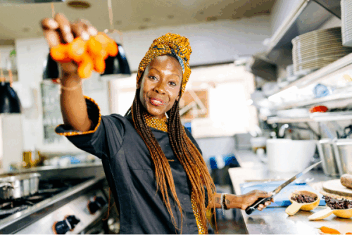

¿Quieres hacernos una propuesta?
¿Quieres proponer una actividad para el Centro? ¿te gustaría actuar en el Festival del próximo año? ¿quieres que vayamos a tu universidad, museo o colegio? ¿quieres alquilar el espacio? ¿quieres que colaboremos en alguna actividad?
Sí, tengo una idea